What we set out to do
Synthetic biology reaches Taiwanese classrooms mostly as an argument about genetic modification, and usually after somebody has already lost it. Students meet the controversy before they meet the mechanism. That order is the problem: it asks a fourteen-year-old to hold an opinion about a process nobody has shown them. Climate stress on crops has the reverse problem — it is everywhere in the news and almost nowhere in the science curriculum as something you can measure in a beaker in forty minutes.
So the aim was not headcount. It was to put the mechanism first and the argument second, for students who would otherwise get neither. Concretely: every session had to leave a student able to say why heat slows a plant down, not just that it does — and had to leave a teacher with the files to run it again without us in the room.
What we were aiming for
- Integrate, don't duplicate. Before writing a single slide we checked what each age group is already taught, so a lesson introduced something new rather than repeating the textbook.
- Make it hands-on. Every session had to contain something a student did with their hands, not only something they were told.
- Build the transferable skills alongside the content — teamwork, argument, and the habit of checking a claim.
- End on the society question, not start on it. Once students know how the tool works, they can hold a real position on how it should be used.
- Leave the material behind. An outreach event that ends when we leave the building is not education, it is a visit.
Who we worked with
Five schools, three age bands, roughly 144 students between June and August 2026. The elementary programme ran as four separate trials so that we could change the lesson between them and see whether the change worked; the junior high and high school programmes each ran once, at the end of the summer, with the elementary lessons already folded in.
| Date | School | Level | Session | Surveyed (pre / post) | What we measured |
|---|---|---|---|---|---|
| 24 Jun 2026 | Yongping Elementary School | Grades 4–6 | Little Plant Guardians — preliminary trial | 16 / 12 | 7 knowledge items, K–A–P post-survey, open response |
| 25–26 Jun 2026 | Dingxi Elementary School | Grades 4–6 | Little Plant Guardians — trial 1 | 43 / 42 | Same instrument, plus teacher survey |
| 29 Jun 2026 | Affiliated Experimental Elementary School, University of Taipei | Grades 4–6 | Little Plant Guardians — trial 2 | 28 / 22 | Same instrument, plus teacher survey |
| 14 Jul 2026 | Dingxi Elementary School | Grades 4–6 | Little Plant Guardians — trial 3 | 12 / 12 | Same instrument, plus teacher survey |
| Jun–Jul 2026 | school name to add | Grades 7–9 | The Battle Against Climate | n to add | 7 knowledge items, K–A–P post-survey, open response |
| Aug 2026 | school name to add | Grades 10–12 | Decoding the Genetic Code | 28 / 28 | Knowledge items, K–A–P post-survey, teacher survey |
The elementary numbers drop between pre- and post-survey because the pre-survey ran as a Kahoot at the start of the period and the post-survey as a paper form at the end; students who left early, or whose device dropped out, are missing from one side. We have reported both counts rather than the larger one.
How we built the lessons
We ran the education programme on the same Design–Build–Test–Learn loop as the wet lab, for the same reason: the first version of anything is a hypothesis. Splitting the elementary programme into four dated trials was the part that made the loop real — each trial was far enough from the last that the feedback from one could actually change the next.
1 · Design — one owner per age band so depth and vocabulary were set by somebody thinking about only that group
Before designing anything we split the team so each member owned a single age group: primary, middle, or high school. That meant the scientific depth, vocabulary and teaching method for each plan were chosen by someone thinking about one classroom rather than three at once.
The core content stayed constant across all three — synthetic biology, plant biology, sustainability — and only its complexity scaled. We also checked each concept against what schools already teach at that level, so a lesson introduced something new instead of repeating the textbook. That check is what pushed DNA base pairing into the elementary lesson and pushed photosynthesis stoichiometry out of the high school one.
2 · Build — trial every activity on ourselves first timing, safety, and whether the game is actually fun
Every experiment, craft and game was run by the team before it was run by a class. We were checking three things: how long it really takes, where a student can hurt themselves or break something, and whether the activity is engaging on its own or only engaging because we are excited about it.
The leaf-disk experiment changed twice at this stage. The card game changed once. Both changes were about time, not content.
3 · Reach — contacting schools direct email plus a public sign-up form, so a school could come to us
We built a target list of schools and emailed them directly. Because cold email only reaches the schools we already knew about, we also put a Google Form on the Get Involved page of our education website so any teacher who found us could book a workshop without an introduction.
4 · Test — a full run-through a week out a real-time rehearsal, which is how we found the timing errors
Once a date was confirmed we assigned presenters, split the slides so each person taught what they knew best, and held a full practice run about a week before — simulating the real classroom, in real time, including the games and the experiment.
The rehearsals were where we caught the time allocation problems. Almost every one of them was the same problem: the lecture sections were longer than they looked on paper, and they were eating the activity sections.
Sustainability sat inside the loop rather than beside it. Materials were designed to be reusable across sessions, and the whole point of the education website was that the fifth school should not need us to have been at the first four.
The programmes
Three lessons, one spine. Each one moves from a stress a student can name, through an experiment they can watch, into the genetics that makes the stress addressable — and only then to what we are building and whether it should be built. The three tabs below are the three age bands.
Little Plant Guardians: Combating Environmental Stress
Three elementary schools, grades 4 to 6, across June and July, run as four trials so the lesson could be rebuilt between them. The goal was to make climate change concrete — not as weather, but as something that happens to a plant — and then to show that DNA is the reason anything can be done about it.
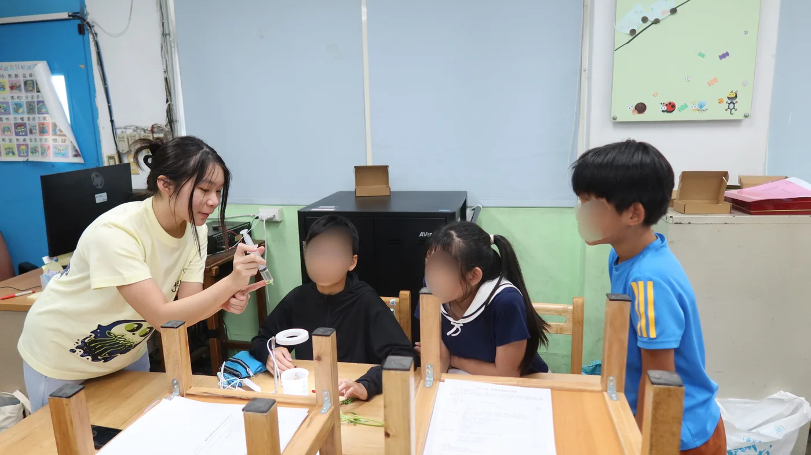
Pre-survey seven multiple-choice items on Kahoot, before anything was taught
A short Kahoot covering the seven concepts the lesson would go on to teach, run cold. It gave us a baseline to compare the post-survey against, and it gave the students a preview of where the session was heading.
Questions of the day discussion opener on climate change and what it does to plants and people
We opened with questions rather than content: what happens to plants as the world warms, and what happens to us if it happens to them. Then we named a few concrete consequences already visible. The questions were there to get the class talking before we asked them to listen.
Vocabulary biotic, abiotic, photosynthesis, genetics — taught through pictures and prefixes
Illustrated slides introduced the words the rest of the lesson depends on. Rather than defining them outright we asked students to infer meaning from the image and from the prefix — bio-, a-, photo- — which turns a vocabulary list into a puzzle and gives them a tool for the next unfamiliar word.
This section grew after trial 2, when students told us the English was the hard part rather than the biology.
Photosynthesis a short video plus the reactants and products, kept deliberately shallow
Inputs and outputs, not mechanism. At this age the useful idea is that a plant makes its own food out of light, water and air, and that anything interfering with the process starves it. We used a short video and a single summary slide.
Plant stress the biotic / abiotic split, and how a plant copes with each
Biotic stress as damage from something living — pests, pathogens. Abiotic as damage from something that is not — drought, heat, salt. Then the coping mechanisms and physiological changes a plant uses against each, which is what makes the two categories worth separating rather than a piece of terminology.
Experiment — leaf disk flotation photosynthesis you can watch, and heat stopping it in real time
Spinach leaf disks start sunk at the bottom of a beaker. Under a light source they generate oxygen and float. The class watched it happen, which is a rare thing for a process usually met as an equation.
Then we introduced heat as the variable: the same disks in warmer water. Flotation slowed sharply or stopped altogether — excess heat damaging plant enzymes, shown rather than asserted. Worksheets asked each group to record what they saw and argue about why.
The role of science — DNA ATCG base pairing, at the board, and why it makes the problem solvable
Base pairing and inheritance, with students coming to the front to write the complementary strand for a given sequence. From there to synthetic biology: if the instructions are readable and writable, a problem like the one in the beaker becomes something you can act on.
ATCG card game an original card game on base pairing, played like Joker
We designed a card game to make the pairing rule automatic. Each card carries a three-letter sequence; a pair is a card and its exact complement. Two Jokers carry letters outside the ATCG alphabet and can never be paired — so the card you get stuck with is the one that breaks the rule. It was the single most-named favourite activity across all four trials.
Craft — self-watering planter a PET bottle and a rope wick, as an analogy for automated release
Students turned recycled PET bottles into self-watering planters using a rope wick. The analogy is the point: a supply that runs on its own, keeping a plant going without anybody standing over it, is exactly what our bioreactor is for.
A teacher in trial 2 told us we had not made that connection explicit enough. From trial 3 on we made it before the activity rather than after.
Post-survey and feedback the same seven items, plus knowledge–attitude–practice and free response
The seven knowledge items again, then attitude and intended-practice statements, then two open questions: what was your favourite part, and what could be better. The open answers are where most of the changes on this page came from.
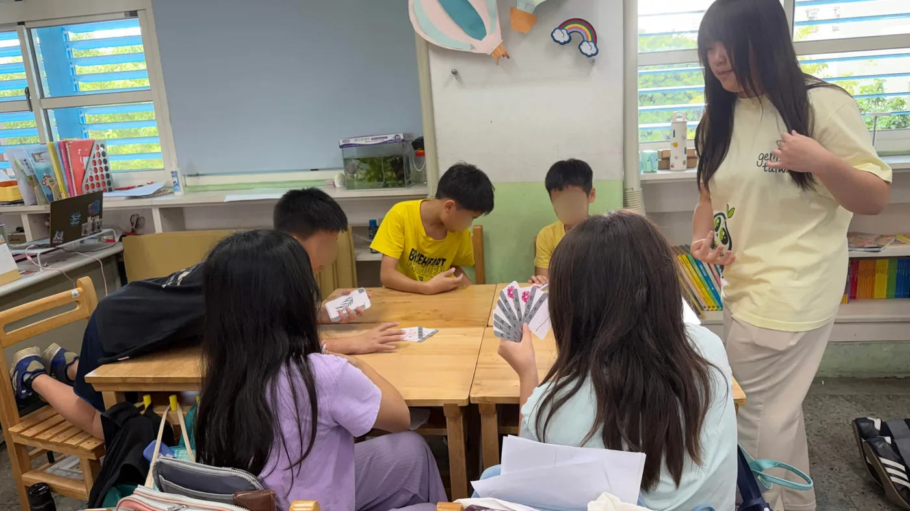
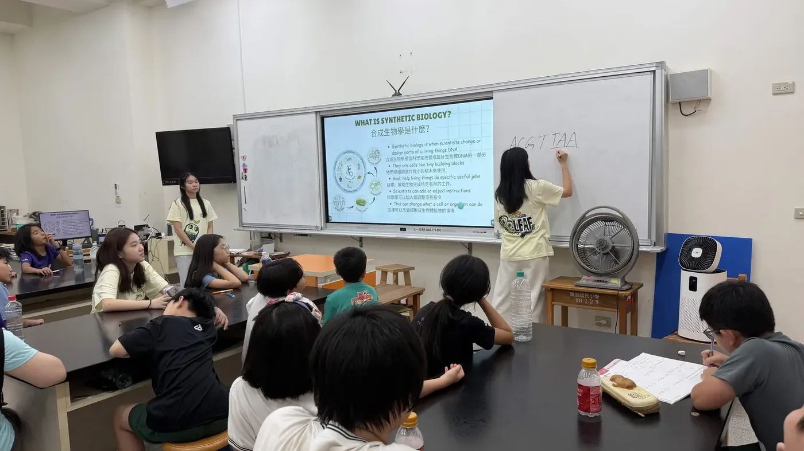
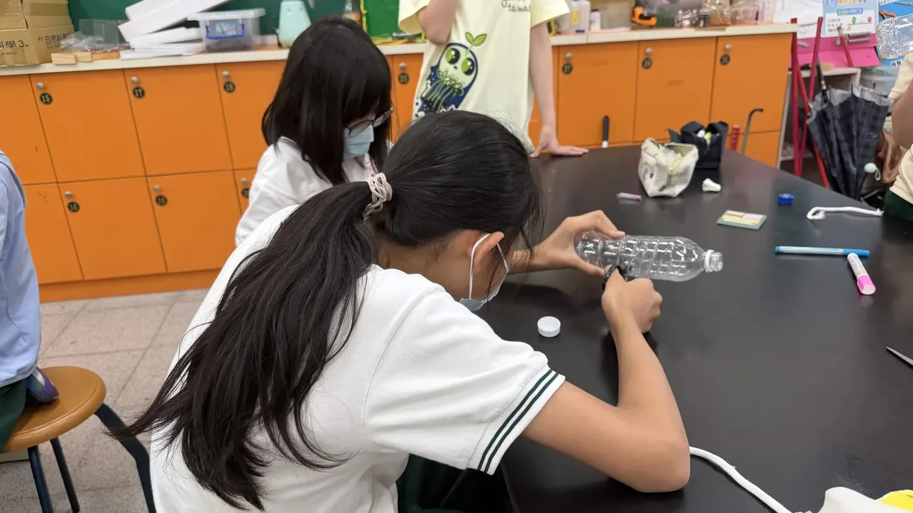
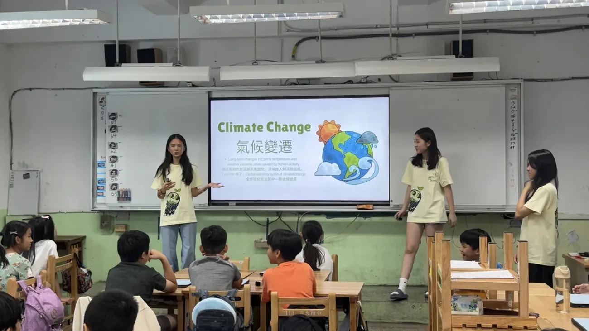
The Battle Against Climate: Miniature Projects to Protect Plants
One junior high school, grades 7 to 9, June to July. This age band can already hold the chemical equation, so photosynthesis arrived as stoichiometry rather than as a story — and the session ended with a formal debate, because students who can argue a position are the ones who have actually understood it.
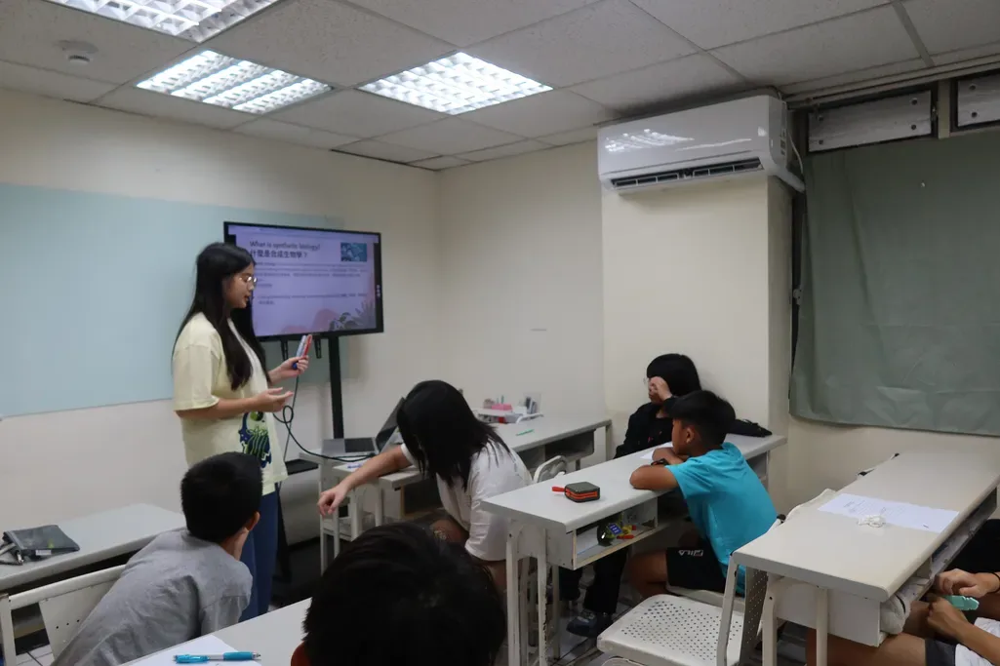
Pre-survey seven Kahoot items on the day's topics, run cold
The same design as elementary: a seven-question Kahoot before teaching, to be compared against the identical items after.
Introduction — climate and plant stress start from the stresses students can already name, then supply the terms
Heat, drought, flooding, pests and disease — all things a student can already name. Only once the list existed did we sort it into biotic and abiotic, so the vocabulary landed on knowledge they already had. Then the plant's own defences: closing stomata, stress-hormone responses.
Photosynthesis the equation, plus an online simulation of limiting factors
The chemical equation and what it means, then questions about what stress does to a leaf and whether photosynthesis continues at all. We used an online game where students set light, water and CO₂ themselves, which makes the idea of a limiting factor obvious in a way a graph does not.
Experiment — leaf disk flotation the same experiment as elementary, with heat as the variable
Sunk spinach disks rising under a lamp, then failing to rise in warm water. Worksheets for recording and group discussion. We kept this identical across age groups deliberately: it is the clearest demonstration we have that heat costs a plant its energy supply.
Synthetic biology DNA structure and function, then real applications and ReLeaf
Because DNA underpins everything else, the structure and function came first, then what synthetic biology does with it in the world, then a short account of our own project as one instance of that.
Card game — sensors, actions and boosts a strategy game where a defence without a sensor loses
Students spend ten Gene Coins on modules: a Sensor (2 points) that detects the condition, an Action (4 points) that releases a heat-resistant peptide or forms a protective biofilm, and a Boost (2 points) that speeds colonisation.
Each round the wheel is spun to reveal a stress. Players holding a valid combination — a Sensor plus a matching Action, optionally a Boost — lay it face up and are safe. Players without one may play a Functional card to steal or swap from a teammate who succeeded. Anyone still exposed takes a disaster token.
The lesson is in the losing hands: a defence with no sensor is dead weight. Sensing is what makes the engineering design smart, and it is the same reason our own construct is built around a stress-responsive promoter rather than constitutive expression.
Debate two teams, three speakers each, on synthetic biology in agriculture
Students split into a supporting and an opposing team and get 8 minutes to prepare. Each team picks three speakers, who confer for 45 seconds and then speak for 2 minutes: the first lays out evidence and reasoning, the second rebuts the opposing first speaker, the third summarises and argues why their side should win.
We put this last on purpose. The controversy around engineering plants is real, and students are entitled to a position on it — but only after they have seen what the technology actually does.
Post-survey knowledge, attitude and practice, plus free response
The seven knowledge items repeated, six attitude statements, two practice statements, and open questions on the best part of the session and what should change.
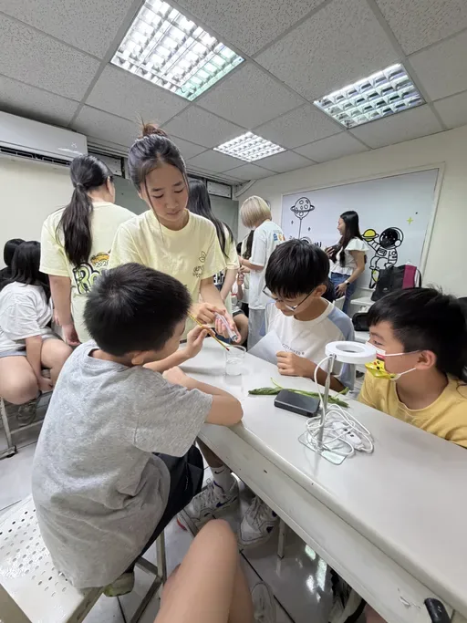
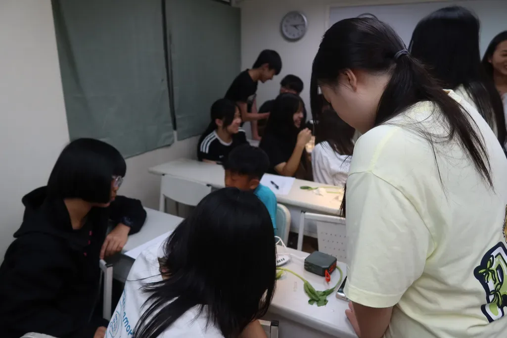
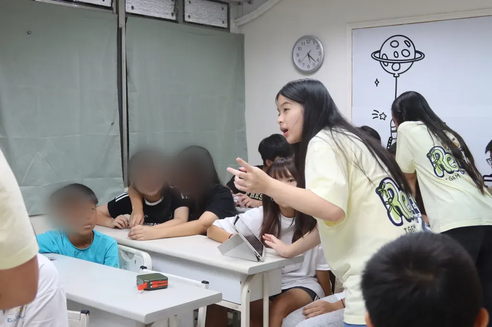
Decoding the Genetic Code: From DNA to the Future of Food Security
One high school, grades 10 to 12, August, 28 students. This is the only age band that got the real thing: a plasmolysis experiment under a microscope, the transcription–translation chain as a relay game, and an honest account of the trade-off at the centre of our own design — that pushing a cell to export more product costs you the cell's viability.
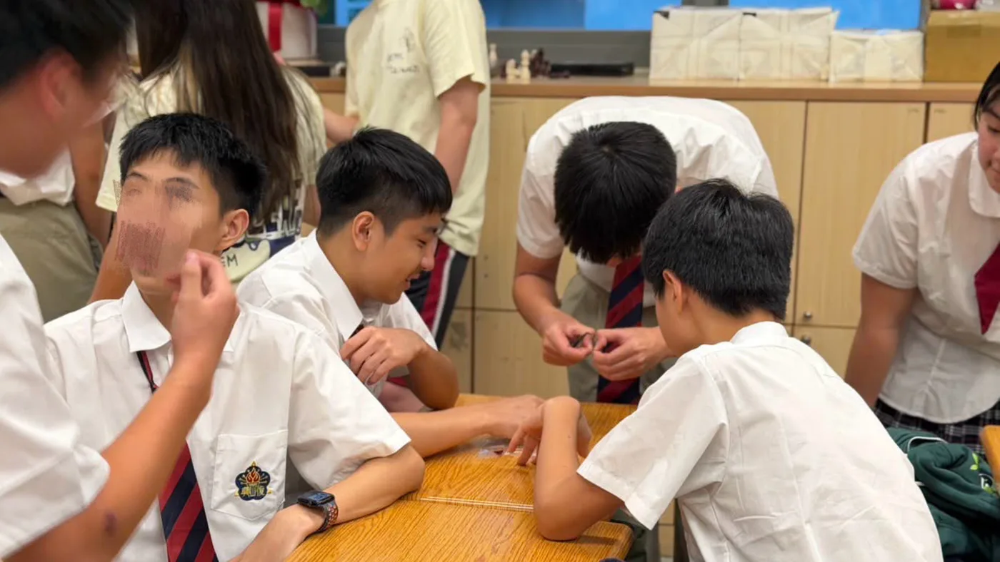
Pre-survey six multiple-choice items on Kahoot, before teaching
A short Kahoot to establish a baseline and to preview the session. The same items were repeated afterwards; the comparison is charted in What stuck.
Introduction — iGEM and synthetic biology what the competition is, and what the field does outside it
A short account of iGEM, then synthetic biology itself with real applications — microorganisms engineered to produce biofuels, biosensors that detect and remove environmental pollutants. Applications first, because at this age the credibility question comes early.
Plant stress opened with a question, and framed to set up the experiment
We opened with “as the Earth gets warmer and drier, what happens to plants?” and worked from the answers into biotic stress from pests and pathogens, abiotic stress from salinity and drought, and the effect of both on daily life. The defence mechanisms came last because the next section depends on them.
Experiment — plasmolysis onion cells under 3 M and 6 M salt, compared between groups
Students observed the pigment in onion cells before and after applying salt solutions. Different groups got 3 M and 6 M, so after 15 minutes the class could compare concentrations against each other rather than against a photograph in a textbook.
Salinity stress stops being an abstraction the moment you watch a membrane pull away from a cell wall down a microscope.
Photosynthesis the leaf-disk experiment on video, run while the onion soaked
The 15-minute soak is dead time, so we filled it with a video of the leaf-disk experiment: two beakers, room-temperature and warm, disks rising in one and lagging in the other. The video then explained the mechanism and posed questions back to the class.
Synthetic biology — ReLeaf the farmer's problem, then the stress-responsive bioreactor
We started from what farmers are actually facing, then explained how our stress-responsive bioreactor works: the synthetic biology that activates the system and releases plant protectants in response to environmental stress, in soil and in hydroponics.
DNA base pairing, transcription, translation, amino acids — a review
A brisk review rather than a first encounter: base-pairing rules, transcription, translation, and the role of amino acids in protein synthesis. It exists to make the next section playable.
Mutation game Sighter, Messenger, Builder — a relay where errors are the point
Students take one of three roles and pass a sequence down the line. The Sighter transcribes a DNA sequence and hands it on. The Messenger passes it along. The Builder translates what reaches them. Each group then checks against the answer key.
What the game teaches is the failure mode: an error introduced anywhere in the chain arrives at the end as a different protein. That is a mutation, felt rather than defined.
Engineered mutation and its cost three routes to more protectant, and the viability trade-off
We then showed how deliberate mutations raise extracellular protectant release through three distinct routes: increasing receptor sensitivity to the stress signal, engineering the export protein, and modifying the protectant molecule for better membrane permeability.
And we gave them the trade-off honestly. Overproduction stresses the bacteria and reduces viability, so the design problem is a balance rather than a maximisation. Students who have just watched a relay game turn one error into a broken protein are in a good position to see why.
Post-survey knowledge, attitude, action, and three open questions
The knowledge items repeated, five attitude statements, four action statements, and three open questions — including “is there anything you are still curious about?”, which produced the most useful answers of the whole programme.
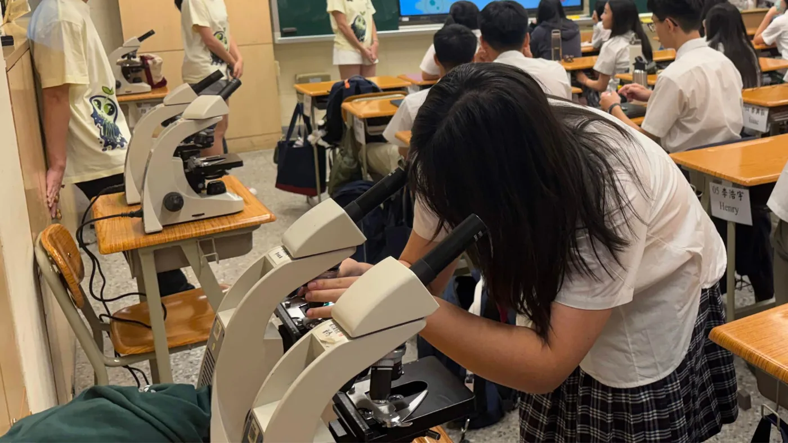
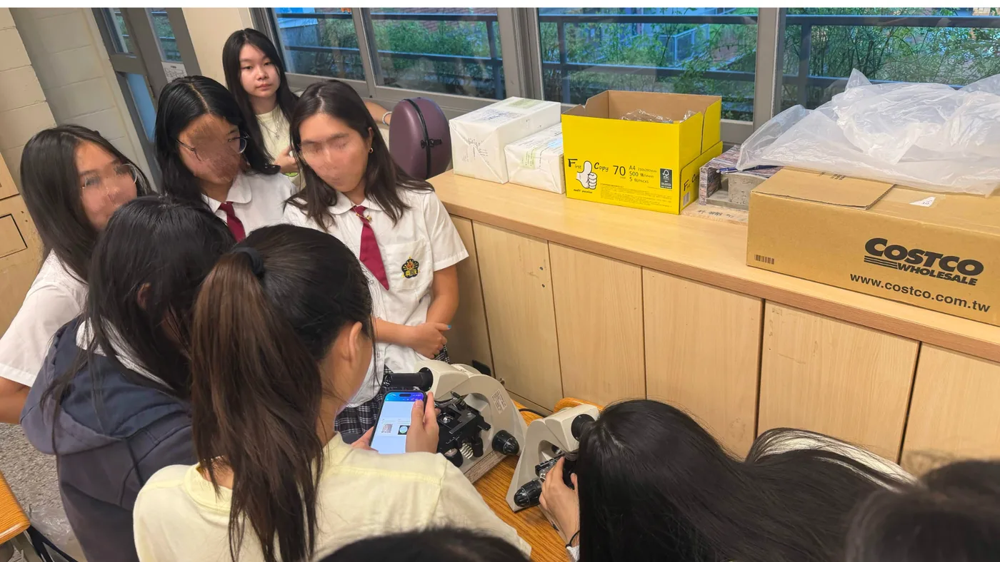
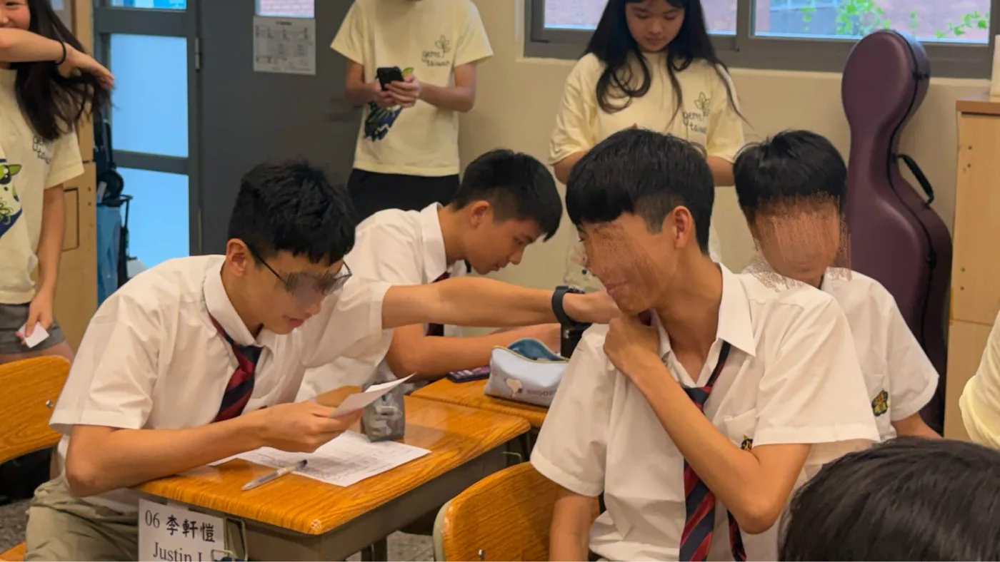
What stuck
Every session was measured the same way: the same knowledge items before and after, then attitude and intended-practice statements, then open response. The charts below are the whole record, including the parts that did not work. Click any chart to enlarge it.
The single clearest pattern across all three age bands is that the concepts with the lowest starting scores made the largest gains, and the one concept that resisted every version of the lesson was DNA base pairing at junior high level. It is also the one concept we taught by explanation rather than by hand.
Elementary: four trials, seven benchmarks
The survey instrument seven knowledge items, eight attitude and practice statements, two open questions
K — Knowledge (7 benchmark items)
- Photosynthesis — why plants need to photosynthesise
- Photosynthesis — the correct inputs
- Photosynthesis — the correct outputs
- Plant stress — that stress splits into abiotic and biotic
- Biotic stress — correctly identifying an example
- DNA and genetics — the four letters and how they pair
- Climate change — identifying one effect on farming
A — Emotion and attitude (A–D, agree / neutral / disagree)
- A Interest in the class — today's activities and lesson were fun and interesting
- B Interest in science and plants — I am more interested in plants and science than before
- C Real-world applications — I believe more that science can help solve real problems
- D Awareness of plant stress — I am more aware that climate and drought affect plant growth
P — Future action (E–H, agree / neutral / disagree)
- E Openness to agricultural biotechnology — I know synthetic biology can be used to improve poor plant growth
- F Desire for more learning — I hope to take part in more lessons like this
- G Problem solving — I want to use science to solve real-world problems
- H Future action — I want to learn more about science and join related activities
Open response
- What was your favourite part of today's class?
- What could be improved about this class?
Knowledge
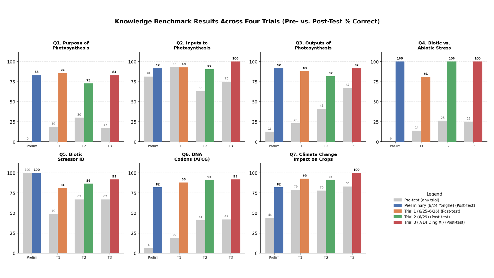
Broken out by trial, the picture is not uniformly upward, and that is the useful part. Q1 (purpose of photosynthesis) dipped in trial 2 before recovering in trial 3. Q2 (inputs to photosynthesis) started high — 81% before we taught anything — so there was little room to move it. Trial 3 was the most consistent run of the four, reaching 100% post-test accuracy on Q2, Q4 and Q7, which is what we would expect if the changes made after trials 1 and 2 were the right ones.
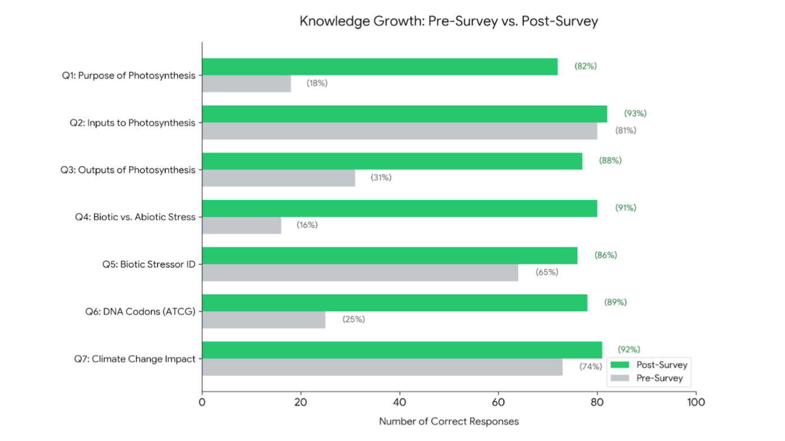
Pooled across the cohort, all seven items gained. The largest jumps were exactly where prior knowledge was thinnest: biotic against abiotic stress went from 16% to 91%, and DNA base pairing from 25% to 89%. Every item finished above 80%.
Attitude and intended practice
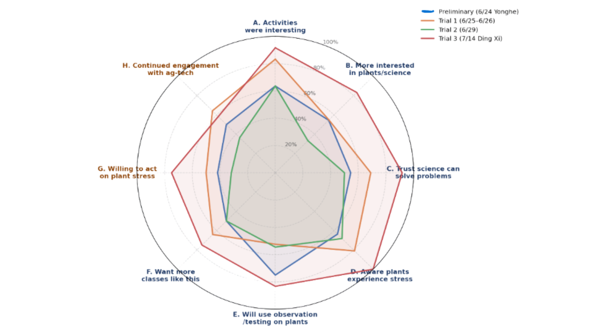
Each trial is a polygon; a wider polygon means more agreement. The preliminary trial and trial 2 cover the least area. Trial 3 reaches furthest on every single axis — the strongest run we had, and the last one, which is the direction you want a curve like this to point.
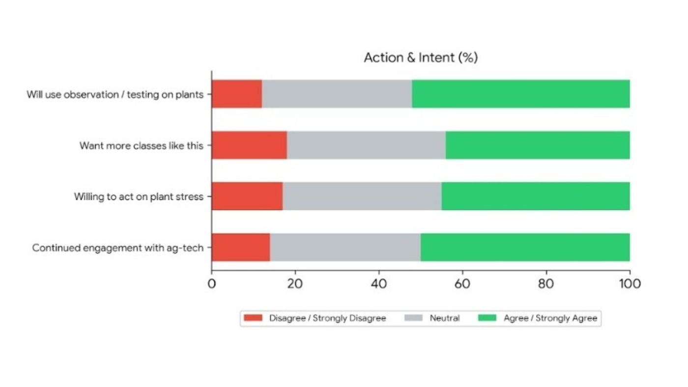
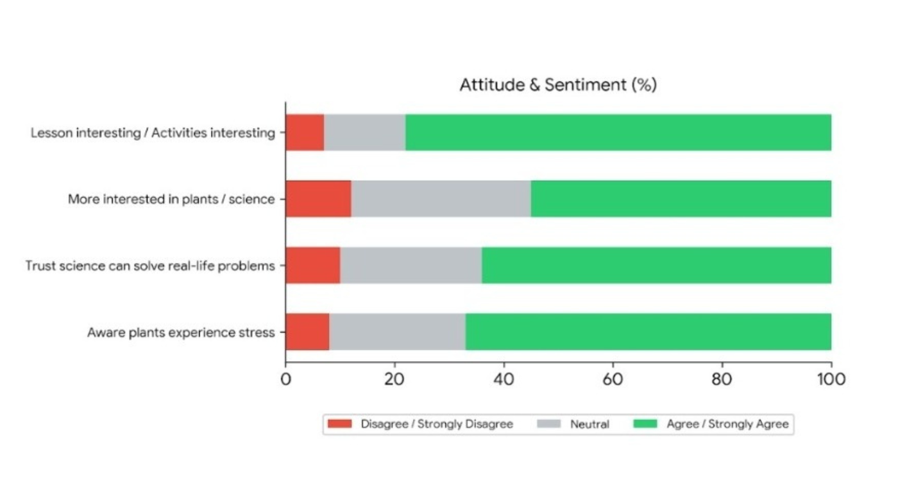
On intended action, a clear majority agreed or stayed neutral about using plant observation tools, joining future classes, acting on plant stress and engaging with agricultural technology; disagreement stayed under 20% on every category. On sentiment, around 80% found the lesson interesting. General scientific curiosity and trust in science drew more neutral answers — which is honest, and about what a single 90-minute workshop should expect to move.
What students and teachers said, unprompted open-response answers across all four trials
Students
Games and interactive activities were named as the best part in every trial. The DNA card game and the Kahoot quizzes came up most often, followed by the leaf flotation experiment and working with soil and seeds. In trial 3 the arts and crafts activity became the clear standout, with several students saying they liked it because it was “a hands-on experience”. A few named learning about DNA and ATCG directly.
Teachers
Teachers described the sessions as content-rich and well-structured. Several singled out the Kahoot, the DNA card game and the self-watering build for keeping students engaged while still tying back to the science, and noted that the bilingual format helped — particularly teaching new vocabulary as its own section rather than in passing. One highlighted students' willingness to get up and present as something worth encouraging. Teachers were enthusiastic about the education website, calling the resources rich and saying they would use them for future teaching, particularly on plant topics. All three teachers who completed the survey said they would take part in or support the programme again.
Junior high: the largest gains, and the one concept that resisted
The survey instrument seven knowledge items, six attitude statements, two practice statements
K — Knowledge (7 benchmark items)
- Photosynthesis purpose — why plants photosynthesise
- Photosynthesis inputs — sunlight, water, CO₂
- Photosynthesis outputs — oxygen, glucose
- Abiotic stress — identifying non-living stressors such as drought
- Biotic stress — identifying living stressors such as pests or fungal infection
- DNA codons — base-pair complementarity (ATCG → TAGC)
- Climate impact on crops — the causal chain from climate change to plant stress to reduced yield to food insecurity
A — Emotion and attitude (A–F, yes / somewhat / no)
- A Interest — found synthetic biology interesting today
- B Academic curiosity — wants to learn more about bacteria and plants
- C Trust in science — trusts experiments as a way of understanding the world
- D Eco-awareness — will pay more attention to weather's effect on plants
- E Scientific-method intent — understands why scientists run experiments to test ideas
- F Desire for more classes — wants more classes like this one
P — Future practice (G–H, yes / somewhat / no)
- G Willingness to act — will observe or record plant growth at home or school
- H Continued engagement — will seek out more on agricultural technology or bacterial engineering
Open response
- What was your favourite part of today's class?
- What could be improved about this class?
Knowledge
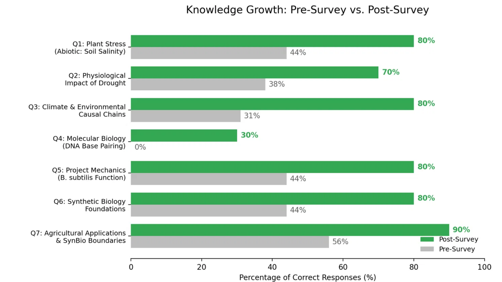
The biggest movement was on the climate causal chain — the full path from climate change through plant stress to reduced yield and food insecurity — which rose 49 points, from 31% to 80%. Understanding of B. subtilis and of synthetic biology foundations both went from 44% to 80%. Agricultural applications and the boundaries of what synthetic biology can do finished highest at 90%.
And then DNA base pairing. It started at 0% — nobody in the room had it — and finished at 30%. That is a real gain from a zero baseline and still a failure by any standard we care about. It is the one concept in the junior high lesson we taught by explaining rather than by handing students something to manipulate, and one student was observed matching ATCG to itself rather than to its complement, which is precisely the error a physical pairing task makes impossible.
Attitude and intended practice
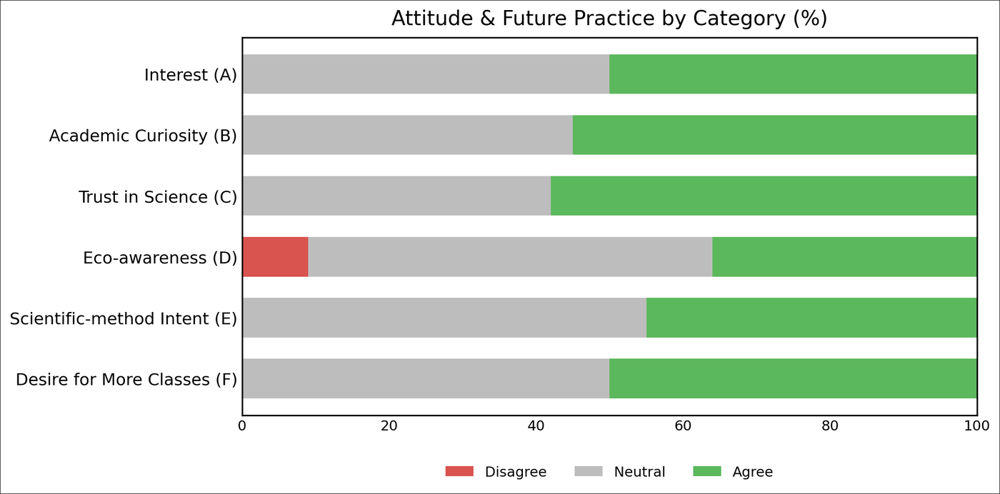
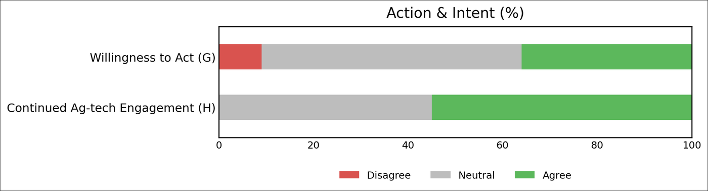
Agreement is strongest on interest, academic curiosity and trust in science, and weakest on eco-awareness — the one statement that asks a student to carry the lesson out of the room and into how they look at the weather. Translating a 90-minute workshop into a lasting sense of environmental urgency is the hardest thing on this instrument, and the chart says so.
What students said, unprompted favourites, and the one consistent complaint
Hands-on activities were named as the most memorable part almost universally — “playing games”, “board games”, “card playing”. Several named the novelty of the material itself, describing the best part of the day as “learning completely new things”. Multiple students summarised the session as “everything was great”.
The critical feedback was consistent and specific: parts of the direct instruction “went on a bit too long”. Notably, this came from strong students as well as struggling ones — a student who scored perfectly across the knowledge benchmarks still named lecture length as the drawback, which suggests the fix is faster transitions into applied work rather than less material.
High school: 28 students, every item up
The survey instrument seven knowledge strands, five attitude statements, four action statements, three open questions
K — Knowledge
- Point mutations — identify which type of mutation is not a point mutation
- Biotic and abiotic stress — distinguish living from non-living stressors
- Plant response to salinity — that high salinity draws water out of cells, causing plasmolysis
- Synthetic biology applications — engineering microorganisms, building biosensors
- Bioreactors — growing cells under controlled conditions to produce useful substances
- Purpose of genetic mutation — that genes and proteins can be deliberately modified, for instance to change which signal a receptor answers
- Mutations and agriculture — how engineered organisms could help plants withstand stress and support food production
A — Emotion and attitude (A–E, agree / neutral / disagree)
- A Real-world applications — synthetic biology can help solve real problems
- B Awareness of plant stress — more aware of how environmental stress affects crops
- C Openness to agricultural biotechnology
- D Interest — found synthetic biology interesting today
- E Desire for more learning — would take part in more sessions like this
P — Future action (G–J, agree / neutral / disagree)
- G Environmental awareness — will notice how heat, rain and drought affect plants day to day
- H Field interest — will consider synthetic biology as a university subject
- I Knowledge sharing — will tell friends or family about biotic and abiotic stress
- J Openness to applications in agriculture
Open response
- What part of today's lesson did you like most?
- What could be improved?
- Is there anything you are still curious about?
Knowledge
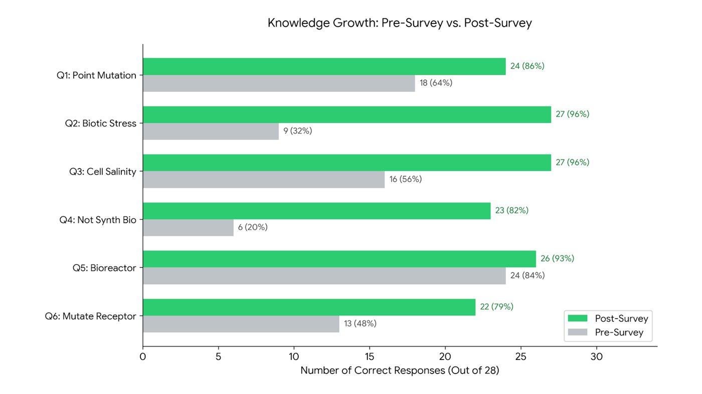
The two largest gains were on the items with the weakest baselines: biotic stress went from 9 correct (32%) to 27 (96%), and identifying what is not synthetic biology from 6 (20%) to 23 (82%). Cell salinity — the concept the plasmolysis experiment was built to teach — went from 16 (56%) to 27 (96%), the joint highest post-test score on the instrument. That is the strongest single piece of evidence we have that the hands-on sections carry the learning.
Attitude and action
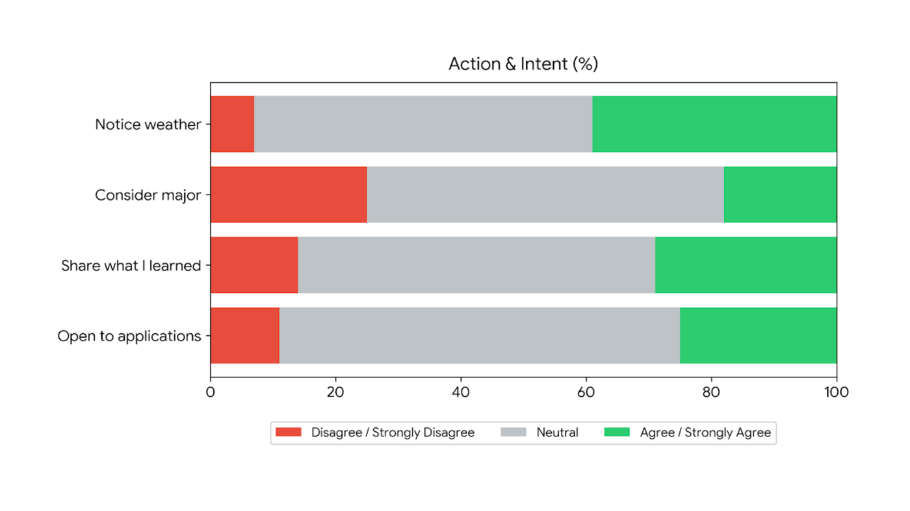
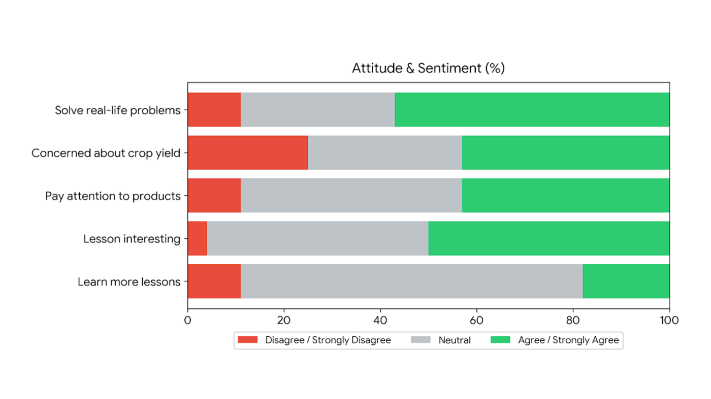
Most students agreed or stayed neutral on synthetic biology's real-world value, on noticing agricultural products, and on the session itself. “Consider major” is the outlier: a quarter of the class disagreed outright that they would consider biology at university, which is a reasonable answer from seventeen-year-olds with existing plans and not something a single workshop should claim to change. On sentiment, agreement peaked on finding the lesson interesting and on wanting to solve real-life problems, and disagreement stayed under 25% on every attitude statement.
What students and the teacher said, unprompted the experiment dominated; the curiosity question told us what to build next
Students
The plasmolysis experiment dominated the favourite-part answers — “peeling the onion”, “observing the cells under the microscope”, “the onion experiment”. Beyond it, students named the mutation game, DNA translation and the messaging game, with one writing: “I like how the team integrated experiment, game, and some important knowledge.”
Teacher
The class's homeroom teacher completed a survey afterwards and described the lesson as interactive, rich in content and well organised, singling out the games and hands-on experiments for making it engaging. He said he would use our lesson plans and slides in future and refer to them when designing related lessons.
What they were still curious about
Several students wanted to know how DNA sequences are actually modified, and asked for a fuller explanation of how mutations arise. Separately they asked for louder delivery, larger type and fewer words per slide — we had 28 students and a fixed period, and tried to fit in as much as possible without asking whether it could all be absorbed at that pace. That is our error, not theirs.
Materials we made
Everything below is free to download, reuse and adapt under the same CC BY 4.0 licence as the rest of this wiki. The slide decks are bilingual, Chinese and English, because that is what made the vocabulary reachable for the students we taught.
Lesson files
- PDF Elementary lesson plan — Little Plant Guardians
- PDF Elementary lesson slides
- PDF ATCG card game — printable deck
- PDF High school lesson plan — Decoding the Genetic Code
- PDF High school lesson slides
The junior high lesson plan, slide deck and card game are on the education website and are still to be mirrored here.
The education website
A workshop ends when we leave the building. The website is the part that does not. We built it so a teacher who has never met us can find a lesson, download it and run it — which is the only version of “sustainable education” that means anything. It carries four things [1]:
About us
Who the team is, what we are building and why we care about accessible science teaching. Transparency about the people behind the material is what makes a teacher willing to use it.
Resources
The library: lesson plans, slides and activities for elementary, junior high and high school, plus a science-and-ethics section that pairs the mechanism with the legal and social questions around it.
Blogs and news
A running diary of the programme — milestones, event write-ups, and what actually happened in each room.
Get involved
A form any teacher can use to request a workshop, propose a collaboration or send feedback, without needing to know one of us first.
Explore the education website →
Games we designed
ATCG card game — elementary base pairing as a matching game, with two cards that can never be paired
Each card carries a three-letter sequence of DNA bases. To discard a pair you must match a card with its exact complement:
- A pairs with T —
AAAmatchesTTT - C pairs with G —
CAGmatchesGTC
The two Jokers carry letters outside the ATCG alphabet, so they cannot be paired by any legal move. Players draw and trade to find matches, discard completed pairs, and try not to be left holding a sequence that could not exist. Played like Joker; takes about fifteen minutes.
Climate Roulette — junior high ten Gene Coins, three modules, and a wheel that decides whether your design survives
Students spend ten Gene Coins building a bacterium, then the teacher spins three random climate draws — heat wave or drought — to see whether it lives.
| Category | Module | Function | Cost |
|---|---|---|---|
| Sensor | Heat / Drought Switch | Detects the environmental condition and activates the defence automatically | 2 |
| Action | Heat Resistance / Water-Locking Module | Releases heat-resistant peptides or forms a protective biofilm | 4 |
| Boost | Rapid Colonisation | Increases the speed at which bacteria establish in the soil | 2 |
Draw “sudden drought” and only bacteria carrying a Drought Radar and a Water-Locking Barrier survive. The takeaway is the question we put to the class afterwards: why is a defence mechanism on its own not enough? Because the sensor is what makes the design smart — it lets the cell detect the stress and deploy the right response at the right time, which is the same reason ReLeaf is built on a stress-responsive promoter rather than a constitutive one.
Mutation relay — high school Sighter, Messenger, Builder — central dogma as a game of telephone
Three roles, one sequence, passed down a line. The Sighter transcribes; the Messenger carries; the Builder translates. Groups check their protein against the answer key. What survives the relay, and what does not, is the lesson: an error anywhere in the chain arrives at the end as a different protein.
Included in the high school lesson plan above.
Two-way, not one-way
Splitting the elementary programme into four dated trials was only worth doing if the feedback from one changed the next. The tables below are the audit trail: what a student or a teacher told us, and what the following session did differently. Not every entry is flattering, and the unflattering ones are the reason the trial 3 numbers look the way they do.
Elementary — what students raised
| Trial | What they told us | What we changed |
|---|---|---|
| Preliminary (24 Jun) | The teaching team was not coordinated enough between sections. | Reinforced the pre-session briefing; every member knew their own role and how to cover for someone else. |
| Trial 1 (25–26 Jun) | Pacing. “Give us more time to play”; “make it more flexible.” | Tracked each group's progress and held the class at checkpoints rather than moving on when the slide deck said to. |
| Trial 1 (25–26 Jun) | Audibility. “The sound could be louder”; “sometimes it was hard to hear.” | Raised video volume as standard and briefed presenters to project. |
| Trial 1 (25–26 Jun) | “I wish there was more help during the assembly and the experiment.” | Fine motor skills vary widely at this age, so we moved to a strict 1:5 mentor-to-student ratio for hands-on sections. |
| Trial 2 (29 Jun) | Language, not science: “too much English”, “too much vocab”, “English is too hard”. | Expanded the vocabulary section and broke the harder words down into shorter, simpler component ideas before using them. |
Elementary — what teachers raised
| Trial | What they told us | What we changed |
|---|---|---|
| Trial 1 (25–26 Jun) | Classroom discipline slipped at points. | Set explicit boundaries and simple rules, and got the class's attention before starting rather than during. |
| Trial 1 (25–26 Jun) | The experiment and its results needed explaining more clearly and in more depth. | Added explanation time and left room to hear what students had observed and wanted to ask. |
| Trial 2 (29 Jun) | The link between the self-watering planter and the day's topic was not made explicit. | Moved the explanation to before the activity, and asked the students to make the connection themselves first. |
| Trial 3 (14 Jul) | Could include more teaching in English, not only the vocabulary. | Carried forward: teach more of the session itself in English, not just the terms. Not yet implemented. |
Junior high and high school
| Level | What they told us | What we will change |
|---|---|---|
| Junior high | Long instructional stretches were less useful than the interactive sections; “spoke for a bit too long”. | Cut lecture time and move faster into applied work. Strong students said this too, so the fix is pace, not depth. |
| Junior high | Games, board games and card activities were named as the highlight in almost every response. | Keep the game-based components, and make sure each game reinforces the specific concept it sits next to. |
| Junior high | Only 30% answered the DNA base-pairing item correctly after the lesson. | Build a colour-coded DNA puzzle kit so students physically match complementary bases, as the elementary card game already does. |
| High school | Curiosity about how DNA sequences are actually modified. | Add a clear worked example showing a sequence being modified, step by step. |
| High school | Wanted a fuller explanation of how mutations occur. | Add explanations and video of the different mutation types and how each arises. |
| High school | Delivery: louder voices, bigger type, fewer words per slide. | Project properly, increase font size, and cut text from the slides. We had tried to fit too much into one period. |
Two of these changed our thinking rather than our slides. The trial 2 comment that the barrier was English rather than biology is why every deck is now bilingual and why vocabulary is taught as its own section instead of in passing. And the junior high base-pairing result is why we no longer believe an abstract concept can be taught by explanation at that age — the elementary card game outperformed the junior high lecture on the same concept, in a younger cohort.
What we would change
Three things, in the order we would fix them.
- Teach every abstract concept with an object. The evidence for this is embarrassing and unambiguous: elementary students got DNA base pairing to 89% with a card game; junior high students got it to 30% with an explanation. The colour-coded pairing kit should exist before the next junior high session, and nothing abstract should be taught by slide again.
- Cut the lecture, not the content. Every age band told us the same thing, and the strongest students said it loudest. The material is not too much; the uninterrupted stretch of talking before students get to do something is. We would rewrite each plan around a hard cap on continuous instruction.
- Measure the junior high and high school programmes the way we measured elementary. The elementary trials are the only part of this page where we can show a change we made and the number that moved afterwards, because only that programme ran more than once. Running the other two age bands a second time, with the same instrument, is the difference between reporting results and demonstrating a loop.
References
- GEMS Taiwan education website. gems-taiwan.github.io/gemstaiwan — lesson plans, slides, activities and the science-and-ethics material, freely downloadable.
- iGEM Competition. Special awards: Best Education. Judging criteria, 2026.